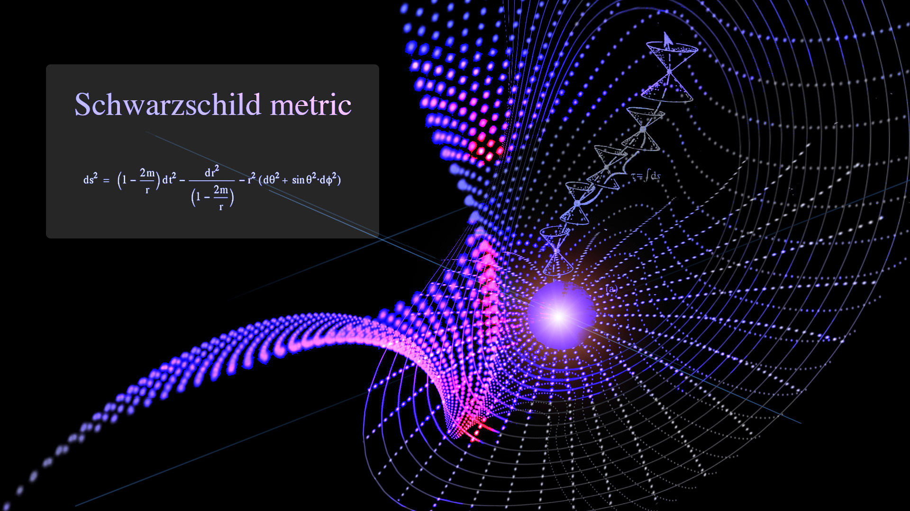

Welcome to J's studying page
Complex analysis, traditionally known as the theory of functions of a complex variable, is the branch of mathematical analysis that investigates functions of complex numbers.
It is useful in many branches of mathematics, including algebraic geometry, number theory, analytic combinatorics, applied mathematics; as well as in physics, including the branches of hydrodynamics, thermodynamics, and particularly quantum mechanics. By extension, use of complex analysis also has applications in engineering fields such as nuclear, aerospace, mechanical and electrical engineering.
As a differentiable function of a complex variable is equal to the sum of its Taylor series (that is, it is analytic), complex analysis is particularly concerned with analytic functions of a complex variable (that is, holomorphic functions).
